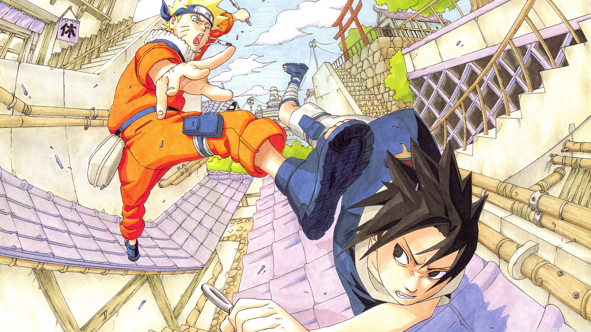
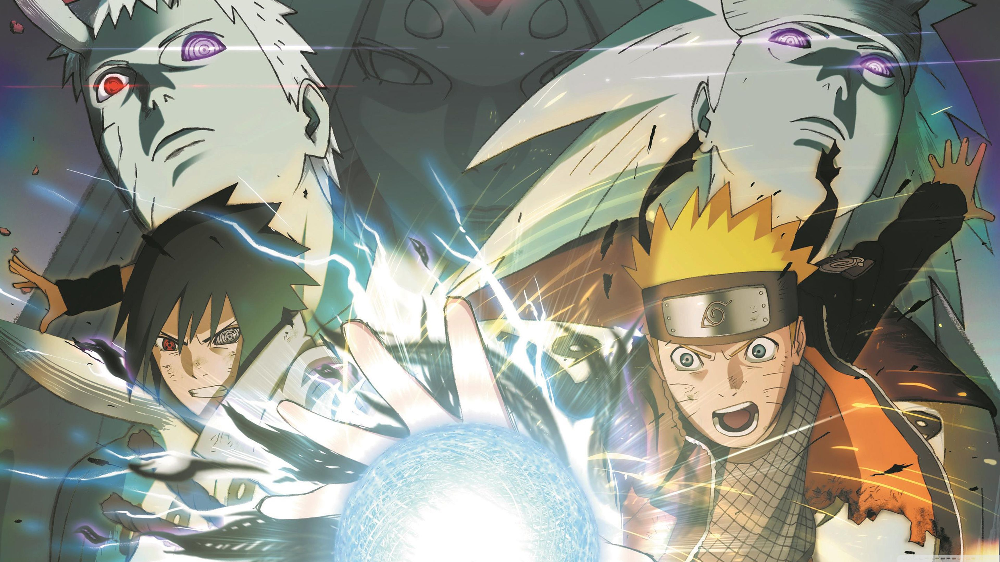
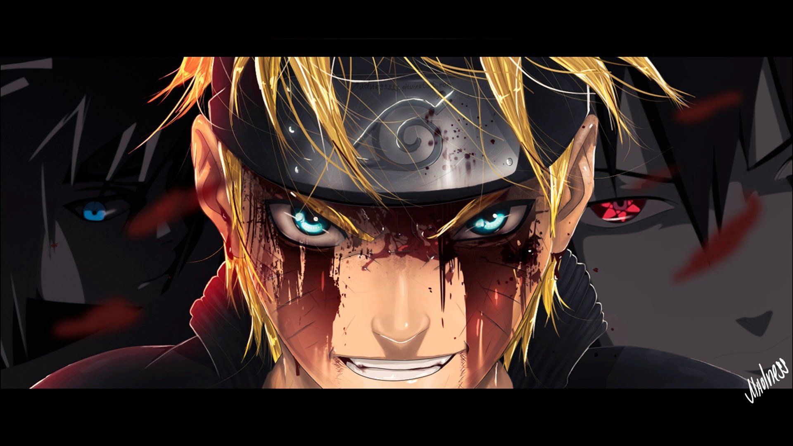
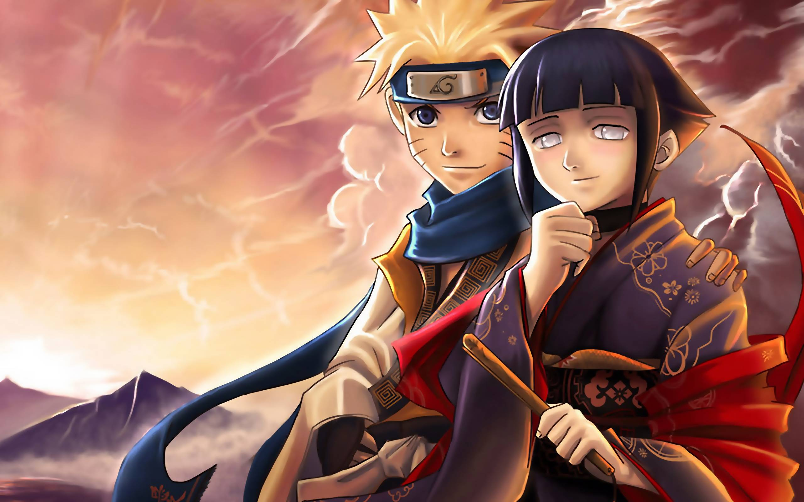
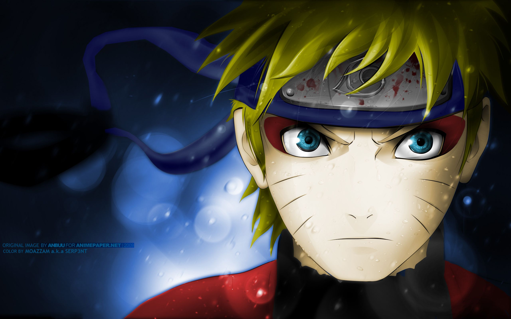
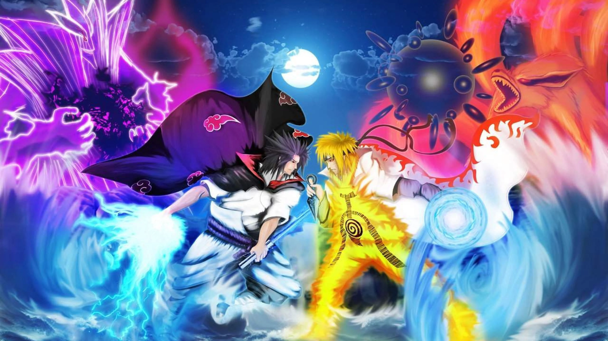
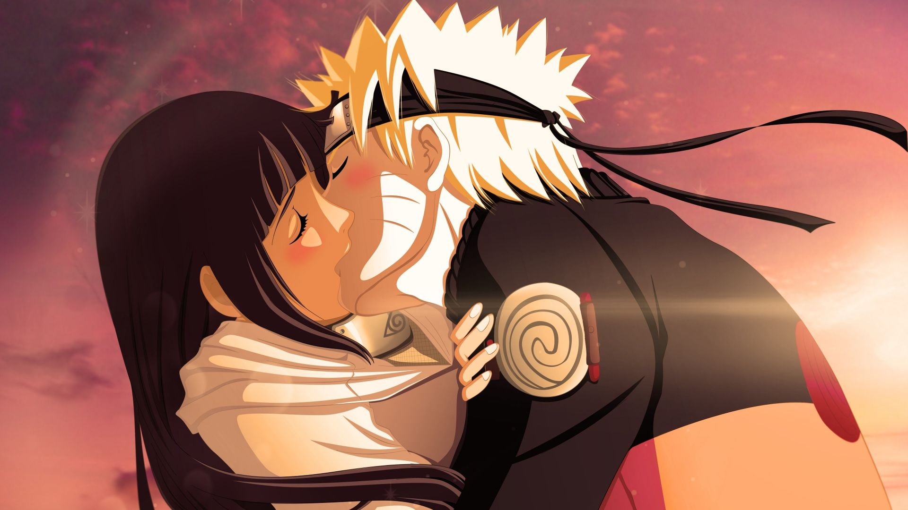

.jpg)
Es una serie de manga escrita e ilustrada por Masashi Kishimoto, posteriormente adaptada a una a serie de anime. La obra narra la historia de un ninja huérfano adolescente llamado Naruto Uzumaki, cuyos padres murieron en el ataque del Zorro Demonio de Nueve Colas, y quien aspira a convertirse en Hokage (líder de su aldea) con el propósito de ser reconocido como alguien importante dentro de la aldea y entre sus compañeros.
La serie se ha vuelto muy popular en Japón y en todo el mundo, y ha recibido numerosos premios y reconocimientos. Además del manga y el anime, también hay una película animada titulada "The Last: Naruto the Movie: " que se estrenó en 2014.
La primera temporada (1) de Naruto, se estrenó 3 de octubre de 2002. La serie sigue a Naruto Shippuden, un joven que se convierte en el 7 hokage despues que ha pasado por mucho sufrimientos.
En el 5 de abril de 2017 salio la nueva generacion, Boruto Uzumaki sigue los pasos de su padre Naruto
y entrena para convertirse en un poderoso ninja. Sin embargo, ser el hijo del líder de la ciudad conlleva sus propios desafíos.
"Número de votos: 1158 · Año: 2015 · Fecha estreno mundial: 2015-08-07 · Titulo Original: BORUTO -NARUTO THE MOVIE- · Presupuesto: 0$ · Recaudacion: 40,200,000$ ...
Varios años después del final de la guerra Shinobi, Boruto, el brillante e impetuoso hijo de Naruto, se prepara para rendir los exámenes de Chunin junto con Sarada Uchiha y el misterioso Mitsuki.

Sasuke es un miembro del clan Uchiha, uno de los clanes ninja más fuertes de la Aldea Oculta de la Hoja, es el hermano menor de Itachi Uchiha y el padre de Sarada Uchiha.
Last updated 3 mins ago

Itachi es el primer hijo de Fugaku Uchiha y Mikoto Uchiha. Es hermano mayor de Sasuke Uchiha. Tanto en el anime como en el manga, es considerado un antagonista por muchos de los personajes, tras haber asesinado a casi todos los integrantes de su clan (incluyendo a sus padres y a su novia), además de desertar de su aldea para pasar a formar parte de Akatsuki.
Last updated 3 mins ago

Se convirtió en líder del Clan Uchiha, era el hermano mayor de Izuna Uchiha como a su vez fue la reencarnación de Indra otsutsuki, es el Uchiha más fuerte y el shinobi más poderoso de todos los tiempos. En la primera parte de la serie se le menciona durante la batalla entre Naruto contra Sasuke cuando Sasuke hace mención a la batalla que tuvo lugar entre el Primer Hokage y Madara, luego es mencionado por Kurama al hacer mención del odio de Sasuke en la segunda parte de la historia.
Last updated 3 mins ago

Kakashi es un ninja de la Aldea Oculta de la Hoja, y es el líder y sensei del «Equipo 7», compuesto por Naruto Uzumaki, Sasuke Uchiha y Sakura Haruno. Sin embargo, Sasuke abandona el equipo y posteriormente se introduce a Sai como su reemplazo.
Last updated 3 mins ago

Guy es el sensei más excéntrico de la serie, y admirador de la juventud. Tiene la costumbre de ponerse a sí mismo condiciones (muchas veces desmesuradas) en sus entrenamientos y disputas, del estilo si no lo consigo haré esto o aquello, lo que puede llegar a obligarle a hacer cosas como dar varias vueltas a la aldea haciendo el pino, sin descansar, su mismo nombre es una derivación de la frase en inglés "mighty guy" (tipo duro).
Last updated 3 mins ago

es un personaje del manga y anime Naruto. Forma parte de la Organización Akatsuki, donde inicialmente su compañero era Sasori pero posteriormente, después de su muerte, su compañero fue Obito Uchiha usando a su personaje Tobi, con quien presentó divertidas ocasiones.
Last updated 3 mins ago

era conocido como "El Relámpago Amarillo de Konoha",dada por su capacidad de desplazarse y luchar a gran velocidad, por esta razón se dio la orden en la Tercera Gran Guerra Ninja cualquier shinobi de otras aldeas, que se encontraban directamente con él, tenían la inmediata orden de retirada sin cuestionar.
Last updated 3 mins ago

es uno de los antagonistas principales de la serie de manga y anime Naruto. Es presentado por primera vez en el arco «Kakashi Gaiden», como un ninja que se sacrifica para salvar a sus amigos de unos ninjas rivales.
Last updated 3 mins ago

es uno de los personajes de la serie de manga y anime Naruto. Es un genin de Konoha que accede al examen de Chūnin con Neji Hyūga y Tenten, todos ellos discípulos de Might Guy.
Last updated 3 mins ago
Last updated 3 mins ago
Last updated 3 mins ago
Last updated 3 mins ago